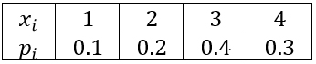
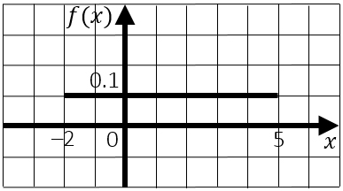
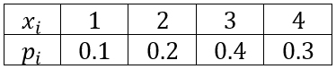
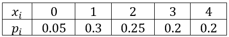
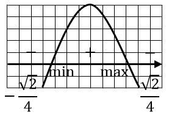
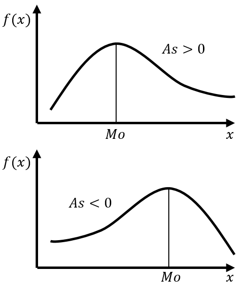

8 ЧИСЛОВЫЕ ХАРАКТЕРИСТИКИ СЛУЧАЙНЫХ ВЕЛИЧИН
Числовые характеристики случайной величины – числа, в сжатой форме выражающие наиболее существенные черты распределения случайной величины
К ним относятся:
1) математическое ожидание
2) дисперсия
3) среднеквадратическое отклонение
4) мода
5) медиана
6) начальный момент \(k\)-го порядка
7) центральный момент \(k\)-го порядка
8) асимметрия
9) эксцесс
8.1 МАТЕМАТИЧЕСКОЕ ОЖИДАНИЕ
Математическое ожидание случайной величины – ее среднее значение
Математическое ожидание дискретной случайной величины \(X\) называется сумма произведений всех ее значений на соответствующие им вероятности, т. е.:
\(M[X]=x_1p_1+x_2p_2+⋯+x_np_n\)
Пример
Дискретная случайная величина задана рядом распределения
Вычислить математическое ожидание случайной величины \(X\)

Решение
\(M[X]=1⋅0.1+2⋅0.2+3⋅0.4+4⋅0.3=0.1+0.4+1.2+1.2=2.9\)
Математическое ожидание непрерывной случайной величины \(X\) – значение несобственного интеграла в том случае, если он сходится:
\(M[X]=\int_{-∞}^∞{x⋅f(x)dx}\)
Пример
Кривая распределения непрерывной случайной величины \(X\) изображена на рисунке
Вычислить математическое ожидание случайной величины \(X\)

Решение
\(M[X]=∫_{-2}^5{x⋅0.1dx}=0.1⋅\frac{x^2}{2}|_{-2}^5=0.05⋅(5^2-(-2)^2 )=0.05⋅21=1.05\)
Свойства математического ожидания:
1. \(M[C]=C\), где \(C=const\)
2. \(M[C⋅X]=C⋅M[X]\), где \(C=const\)
3. \(M[X+Y]=M[X]+M[Y]\) или \(M[X_1+X_2+⋯+X_n]=M[X_1]+M[X_2]+⋯+M[X_n]\)
4. \(M[X-Y]=M[X]-M[Y]\)
5. \(M[X⋅Y]=M[X]⋅M[Y]\) или \(M[X_1⋅X_2⋅…⋅X_n]=M[X_1]⋅M[X_2]⋅…⋅M[X_n]\)
Замечание
Свойства 3 и 4 имеют место как для независимых, так и для зависимых случайных величин, а свойство 5 справедливо только для независимых случайных величин
\(M[M[X]]=M[X]\)
Пример
Даны математические ожидания двух случайных величин \(M[X]=3\) и \(M[Y]=-2\)
Вычислить математическое ожидание \(M[2Y-4X]\)
Решение
Воспользуемся свойствами 2 и 4 математического ожидания
\(M[2Y-4X]=M[2Y]-M[4X]=2⋅M[Y]-4⋅M[X]=2⋅(-2)-4⋅3=-16\)
8.2 ДИСПЕРСИЯ
Дисперсия – отклонение (разброс, рассеяние) значений случайной величины относительного среднего значения
Отклонение – случайная величина, равная разности \(X-M[X]\)
Теорема 1
Математическое ожидание отклонения равно 0
Дисперсия случайной величины – математическое ожидание квадрата отклонения:
\(D[X]=M\left[(X-M[X])^2\right]\)
ЗамечаниеДисперсия случайной величины является неотрицательной величиной
Теорема 2
Дисперсия случайной величины равна разности между математическим ожиданием квадрата случайной величины и квадратом ее математического ожидания:
\(D[X]=M[X^2]-M^2[X]\)
Дисперсия для дискретной случайной величины вычисляется по формуле:
\(D[X]=M[X^2]-M^2[X]\)
где:\(M[X]=x_1p_1+x_2p_2+⋯+x_np_n\)
\(M[X^2]=x_1^2p_1+x_2^2p_2+⋯+x_n^2p_n\)
Пример
Дискретная случайная величина задана рядом распределения
Вычислить дисперсию

Решение
1) \(M[X]=1⋅0.1+2⋅0.2+3⋅0.4+4⋅0.3=2.9\)
2) \(M[X^2]=1^2⋅0.1+2^2⋅0.2+3^2⋅0.4+4^2⋅0.3=9.3\)
3) \(D[X]=M[X^2]-M^2[X]=9.3-2.9^2=9.3-8.41=0.89\)
Дисперсия для непрерывной случайной величины вычисляется по формуле:
\(D[X]=M[X^2]-M^2[X]\)
где:\(M[X]=\int_{-∞}^∞{x⋅f(x)dx}\)
\(M[X^2]=\int_{-∞}^∞{x^2⋅f⋅(x)dx}\)
Пример
Непрерывная случайная величина задана плотностью вероятности
\(f(x)=\left\{\begin{array}{c}0, x ≤ 2\\\frac{2}{9}⋅(x-2), 2 < x ≤ 5\\0, x > 5\end{array}\right\}\)
Найти дисперсию
Решение
1)
\(M[X]=\int_2^5{\frac{2}{9}⋅(x-2)⋅xdx}=\frac{2}{9}⋅\int_2^5{(x^2-2x)dx}=\)
\(=\frac{2}{9}⋅\frac{x^3}{3}|_2^5-\frac{2}{9}⋅x^2|_2^5=\frac{2}{9}⋅\left(\frac{125}{3}-\frac{8}{3}\right)-\frac{2}{9}⋅(25-4)=4\)
2)
\(M[X^2]=\int_2^5{\frac{2}{9}⋅(x-2)⋅x^2dx}=\frac{2}{9}⋅\int_2^5{(x^3-2x^2)dx}=\)
\(=\frac{2}{9}⋅\frac{x^4}{4}|_2^5-\frac{2}{9}⋅\frac{2x^3}{3}|_2^5=\frac{2}{9}⋅\left(\frac{625}{4}-\frac{16}{4}\right)-\frac{2}{9}⋅\left(\frac{250}{3}-\frac{16}{3}\right)=\frac{33}{2}\)
3) \(D[X]=\frac{33}{2}-4^2=\frac{33}{2}-16=\frac{1}{2}\)
Примечание
\(\int_2^5\), т. к. при \(x < 3\) или \(x > 5\) \(f(x)=0\)
Свойства дисперсии:
1. \(D[C]=0\), где \(C=const\)
2. \(D[C⋅X]=C^2⋅D[X]\), где \(C=const\)
3. \(D[X+Y]=D[X]+D[Y]\) или \(D[X_1+X_2+⋯+X_n]=D[X_1]+D[X_2]+⋯+D[X_n]\)
4. \(D[X-Y]=D[X]+D[Y]\)
5. \(D[X+C]=D[X]\), где \(C=const\)
Пример
Даны дисперсии двух независимых величин \(D[X]=4\) и \(D[Y]=6\)
Вычислить дисперсию \(D[3Y-2X]\)
Решение
Воспользуемся свойствами 2 и 4 дисперсии
\(D[3Y-2X]=D[3Y]+D[2X]=3^2⋅D[Y]+2^2⋅D[X]=9⋅6+4⋅4=54+16=70\)
8.3 СРЕДНЕКВАДРАТИЧЕСКОЕ ОТКЛОНЕНИЕ
Для оценки рассеивания возможных значений случайной величины вокруг среднего значения кроме дисперсии служит среднеквадратическое отклонение
Среднеквадратическое отклонение случайной величины \(X\) – квадратный корень из дисперсии:
\(σ[X]=\sqrt{D[X]}\)
Так как дисперсия имеет размерность квадрат случайной величины, что в сравнительных целях неудобно, то используют среднеквадратическое отклонение, имеющее размерность случайной величины
8.4 МОДА
Мода \(Mo[X]\) случайной величины \(X\) – ее наиболее вероятное значение
Мода может не существовать, иметь единственное значение (такие распределения называются унимодальными) или иметь множество значений (полимодальные распределения)
Наличие более чем одной моды часто указывает на разнородность материала, который положен в основу исследования
Мода дискретной случайной величины – ее значение \(x_i\), для которого вероятность \(p_i\) достигает максимума
Пример
Дискретная случайная величина задана рядом распределения:

Найти моду
Решение
Наибольшая вероятность равна \(p_{max}=0.3\), значит мода \(Mo[X]=1\)
Мода непрерывной случайной величины – ее значение, для которого плотность вероятности достигает максимума
Пример
Найти моду для непрерывной случайной величины \(X\), если:
\(f(x)=\left\{\begin{array}{c}0, x<0\\8x⋅e^{-4x^2}, x ≥ 0\end{array}\right\}\)
Решение
Найдем точку максимума функции \(f(x)\)
\(f^ʹ⋅(x)=(8x⋅e^{-4x^2})^ʹ=⋅(8x)^ʹ⋅e^{-4x^2}+8x⋅(e^{-4x^2})^ʹ=\)
\(=8⋅e^{-4x^2}+8x⋅e^{-4x^2}⋅(-8x)=8⋅e^{-4x^2}⋅(1-8x^2)\)
Решая уравнение \(1-8x^2=0\), находим:
\(x=±\frac{1}{\sqrt{8}}\) или \(x=±\frac{\sqrt{2}}{4}\)
Мода равна \(Mo[X]=\frac{\sqrt{2}}{4}\)

8.5 МЕДИАНА
Медиана непрерывной случайной величины \(X\) – такое значение \(Me[X]\), для которого одинаково вероятно, окажется ли случайная величина меньше или больше \(Me[X]\), т. е.:
\(P(X < Me[X])=P(X > Me[X])\)
Графически медиана – абсцисса точки, в которой площадь, ограниченная кривой распределения, делится пополам
В случае симметричного распределения медиана совпадает с модой и математическим ожиданием
Пример
Найти медиану непрерывной случайной величины \(X\), если:
\(f(x)=\left\{\begin{array}{c}0, x < 0\\8x⋅e^{-4x^2}, x ≥ 0\end{array}\right\}\)
Решение
Медиана \(Me[X]=x_1\) определяется как значение случайной величины, которая делит площадь фигуры, ограниченной графиком функции \(f(x)\), на две равные части
По свойству плотности вероятности \(\int_{-∞}^∞{f(x)dx=1}\), поэтому медиану можно найти, используя равенство:
\(\int_0^{x_1}{8x⋅e^{-4x^2}dx}=\frac{1}{2}\) или \(\int_{x_1}^∞{8x⋅e^{-4x^2}dx}=\frac{1}{2}\)
Проще решить первое уравнение
\(∫_0^{x_1}{8x⋅e^{-4x^2}dx}=\left[\begin{array}\-4x^2=t\\(-4x^2)^ʹdx=t^ʹdt\\-8xdx=dt\\8xdx=-dt\\dx=-\frac{dt}{8x}\end{array}\right]=∫_0^{-4x_1^2}{e^t(-dt)}=-e^t|_0^{-4x_1^2}=-(e^{-4x_1^2}-e^0)=\)
\(=1-e^{-4x_1^2}\)
Из уравнения \(1-e^{-4x_1^2}=\frac{1}{2}\) найдем искомую медиану
\(e^{-4x_1^2}=\frac{1}{2}\)
Прологарифмируем обе части уравнения: \(\ln{e^{-4x_1^2}}=\ln{\frac{1}{2}}\)
См. свойства натуральных логарифмов:
\(-4x_1^2=\ln{\frac{1}{2}}\)
\(x_1^2=\frac{\ln{2}}{4}\)
Ответ: \(x_1=\sqrt{\frac{\ln2}{4}}\) или \(x_1=-\sqrt{\frac{\ln2}{4}}\)
\(Me[X]=\frac{\sqrt{\ln{2}}}{2}\)
8.6 МОМЕНТЫ СЛУЧАЙНОЙ ВЕЛИЧИНЫ
Обобщением основных числовых характеристик случайной величины является понятие моментов случайной величины
Различают начальные и центральные моменты случайной величины
Начальный момент \(k\)-го порядка \(v_k\) случайной величины \(X\) – математическое ожидание величины \(X^k\), т. е.:
\(v_k=M[X^k]\)
В частности, \(v_1=M[X]\)Для дискретных случайных величин начальный момент \(k\)-го порядка вычисляются по формуле:
\(v_k=x_1^kp_1+x_2^kp_2+⋯+x_n^kp_n\)
Для непрерывных случайных величин начальный момент \(k\)-го порядка вычисляется по формуле:
\(v_k=∫_{-∞}^∞{x^k⋅f(x)dx}\)
Центральный момент \(k\)-го порядка \(μ_k\) случайный величины \(X\) – математическое ожидание \(k\)-ой степени отклонения, т. е.:
\(μ_k=M[(X-M[X])^k]\)
В частности, \(μ_1=0\); \(μ_2=D[X]\)Для дискретных случайных величин центральный момент \(k\)-го порядка вычисляется по формуле:
\(μ_k=(x_1-M[X])^kp_1+(x_2-M[X])^kp_2+⋯+(x_n-M[X])^kp_n\)
Для непрерывных случайных величин центральный момент \(k\)-го порядка вычисляется по формуле:
\(μ_k=∫_{-∞}^∞{(x-M[X])^k⋅f(x)dx}\)
Соотношения между начальными и центральными моментами:
\(μ_2=v_2-v_1^2\)
\(μ_3=v_3-3v_1v_2+2v_1^3\)
\(μ_4=v_4-4v_1v_3+6v_1^2v_2-3v_1^4\)
Для симметричного распределения непрерывной случайной величины каждый центральный момент нечетной степени равен 0
Для несимметричного распределения – не равен 0, значит любой из этих моментов может служить для оценки симметрии
8.7 АСИММЕТРИЯ
Для оценки симметрии выбран нечетный момент наименьшего порядка, не равный 0, т. е. \(μ_3\)
Чтобы получить безразмерную характеристику, его делят на \(σ^3[X]\) (т. к. \(μ_3\) имеет размерность куба случайной величины)
Асимметрией (или коэффициентом скошенности) случайной величины \(X\) называется величина, равная:
\(As=\frac{μ_3}{σ^3[X]}\)

Асимметрия применяется для непрерывных случайных величин
Знак асимметрии определяется по расположению кривой распределения относительно моды
8.8 ЭКСЦЕСС
Эксцесс (или коэффициент островершинности) случайной величины \(X\) – характеристика, определяемая равенством:
\(Ex=\frac{μ_4}{σ^4[X]}-3\)
Эксцесс применяется для непрерывных случайных величин
Для наиболее распространенного в природе нормального закона распределения отношение \(μ_4\) к \(σ^4[X]\) равно 3, поэтому для оценки крутизны исследуемого распределения в сравнении с нормальным, из этого отношения вычитается 3
Кривые распределения, у которых \(Ex < 0\), менее крутые, имеют более плоскую вершину и называются плосковершинными
Кривые распределения, у которых \(Ex > 0\), более крутые, имеют острую вершину и называются островершинными